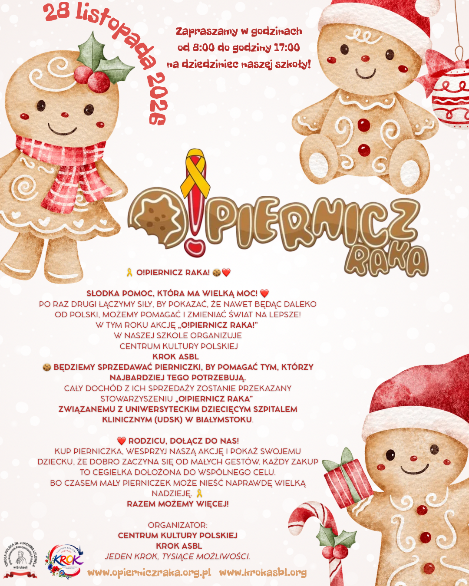

🎗️ UNE AIDE SUCRÉE QUI A UN GRAND POUVOIR ! ❤️
Pour la deuxième fois, nous unissons nos forces pour montrer que même loin de la Pologne, nous pouvons aider et rendre le monde meilleur ! Cette année, l'action « O!piernicz Raka ! » au sein de notre école est organisée par le Centre de la Culture Polonaise KROK ASBL.
🍪 Nous vendrons des pains d'épices festifs pour venir en aide à ceux qui en ont le plus besoin. L'intégralité des bénéfices de la vente sera reversée à l'association « O!PIERNICZ RAKA », liée à l'Hôpital Clinique Universitaire pour Enfants (UDSK) de Białystok.
Détails de l'événement :
- 📅 Date : 28 novembre 2026 (samedi)
- ⏰ Heures : 08:00 – 17:00
- 📍 Lieu : Cour de l'École Polonaise Joachim Lelewel auprès de l'Ambassade de Pologne à Bruxelles
- 🍪 Objectif : Soutien aux jeunes patients en oncologie de l'UDSK de Białystok
❤️ Parents, rejoignez-nous !
Achetez un pain d'épice, soutenez notre action et montrez à vos enfants que la bienveillance commence par de petits gestes. Chaque achat est une pierre apportée à notre objectif commun. Car parfois, un petit pain d'épice peut porter un immense espoir. 🎗️
Ensemble, nous pouvons faire plus !
Organisateur : CENTRE DE LA CULTURE POLONAISE KROK ASBL
Un pas, des milliers de possibilités.
En savoir plus sur l'initiative : www.opierniczraka.org.pl
Vous souhaitez participer à nos prochains projets ?
Suivez nos initiatives à venir ou soutenez nos actions en tant que bénévole ou donateur.